Congratulations!
You've
found
Rocky Frisco's Web Page
PHOTO BY Teresa Gross of TeeBabe Productions

Rocky Frisco
Rocky sings "Have I Got the Blues 4 U" from the movie, "Red Dirt on 66, a Road Movie; The Director's Cut"
Buy Rocky's songs online
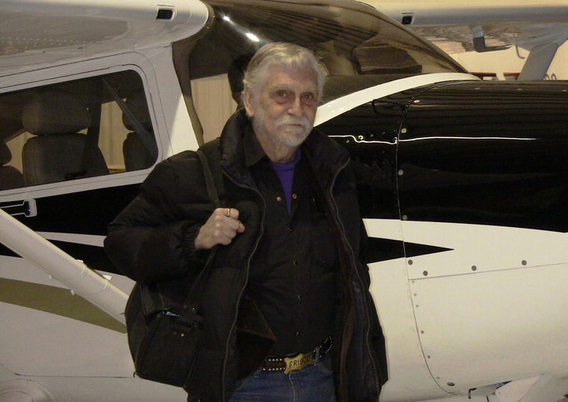
photo by Jai Rogers
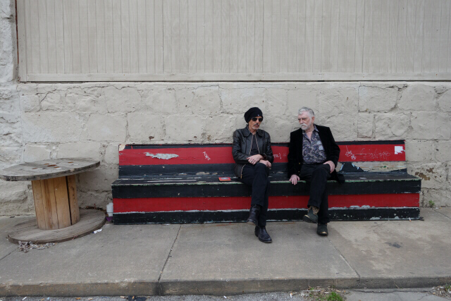
Billy Bob Thornton and Rocky Frisco
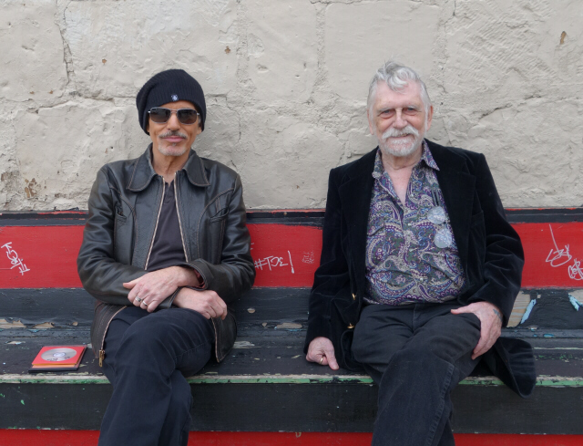
Billy Bob Thornton and Rocky Frisco sitting on the old bench behind Cain's
Marina Orlova, my favorite philologist
Beth and I drove to Kansas City on Monday, August 27th for a John Hiatt concert. The opening act was a very pretty lady named Samantha Fish. Her voice had nuances of Bonnie Raitt and Gus Hardin, and when she sang softly, Norah Jones. No mistake, she has her own, very distinctive, voice, without borrowing anything from anybody else. I looked for the guitar player for a second, then realized she was the only guitar player on stage. Samantha could walk onstage with Jeff Beck or Eric Clapton or Jimmy Page and trade licks with them without a minute of rehearsal. Both her singing and playing are fully world-class, fully developed and inspired. When you add them together, all coming from this one young lady, the result is overwhelming. Her website says she has been playing guitar for about seven years. There's no other rational conclusion: Samantha is a miracle. I want to get her to Tulsa as soon as possible. Samantha has lots of songs on Youtube. Treat yourself!
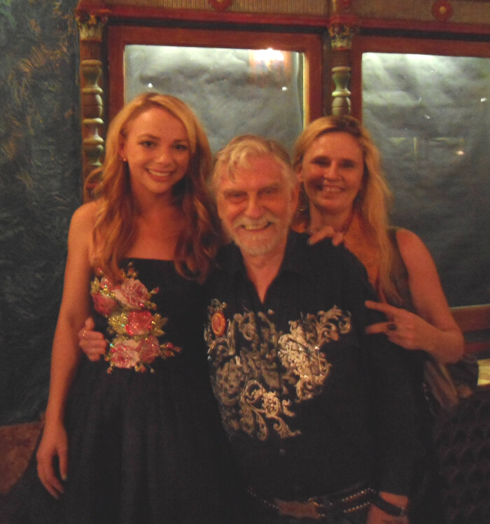
Samantha Fish, Rocky Frisco and Beth Field
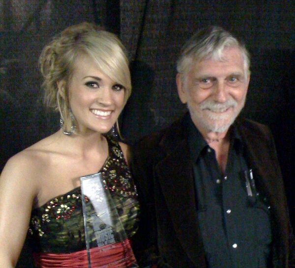
Carrie Underwood and Rocky Frisco
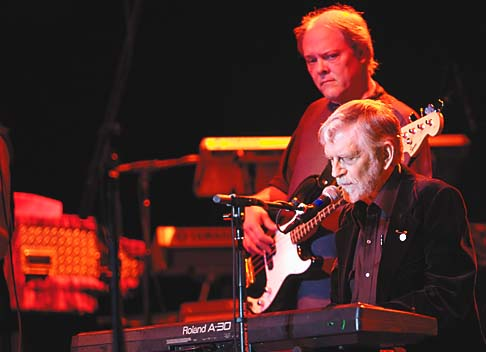
Rocky Frisco and Kevin Phariss at Rocky's Hall of Fame Induction
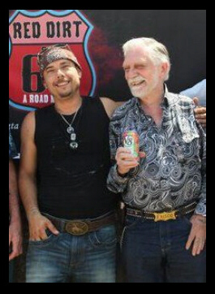
Rocky Frisco and Lata Gouveia during the filming of Red Dirt on 66: A Road Movie
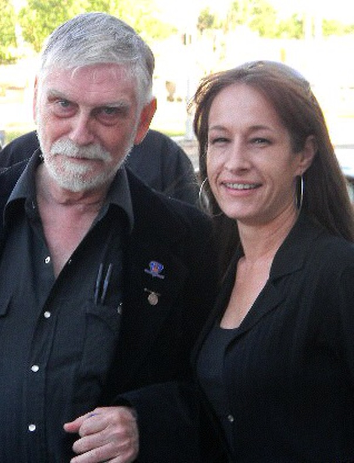
Rocky Frisco and Li'l Tee
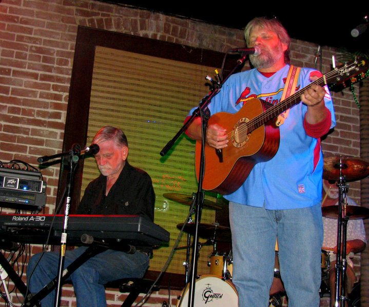
Rocky Frisco and Tom Skinner play at Utopia in Tulsa
Lata's new movie, the trailer.
My absolute favorite song of all-time
and the list includes Gershwin, Pink Floyd, Cheryl Crow and Hanson
Rocky's Liberty Website
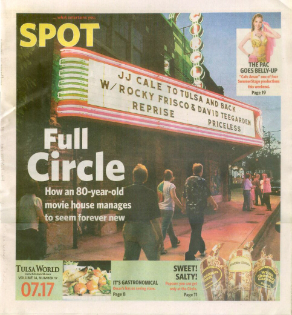
NEW INTERVIEW
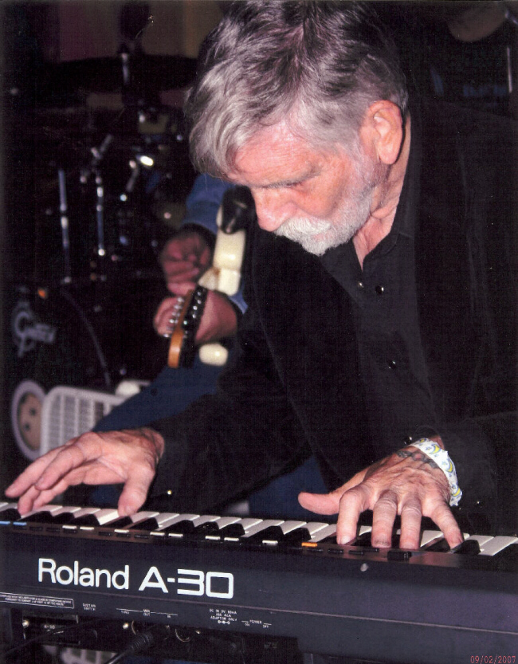
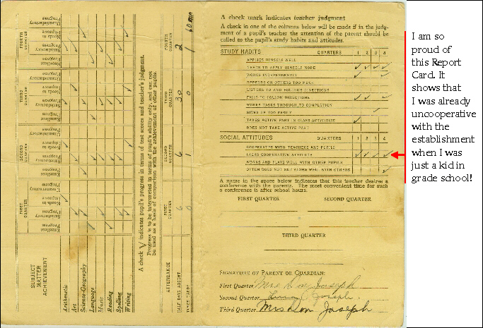
Rocky's recommended links:
http://www.jodan.info
Rocky's Listing at the Internet Movie Data Base
Click here to see a brief history of
Rocky's musical career, so far...
TOM SKINNER'S WEDNESDAY NIGHT SCIENCE PROJECT
Rocky's Shops at CafePress
Rocky Frisco and The Luggage Products

My Favorite Online Daily Cartoon
NEW SECTION: ROCKY'S JEWELRY
Following photos taken at Exit 6C by the late, great Glenna Eisert
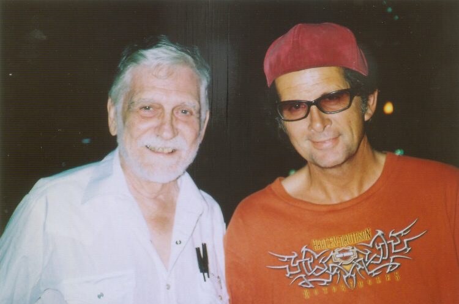
Rocky Frisco & Steve Pryor
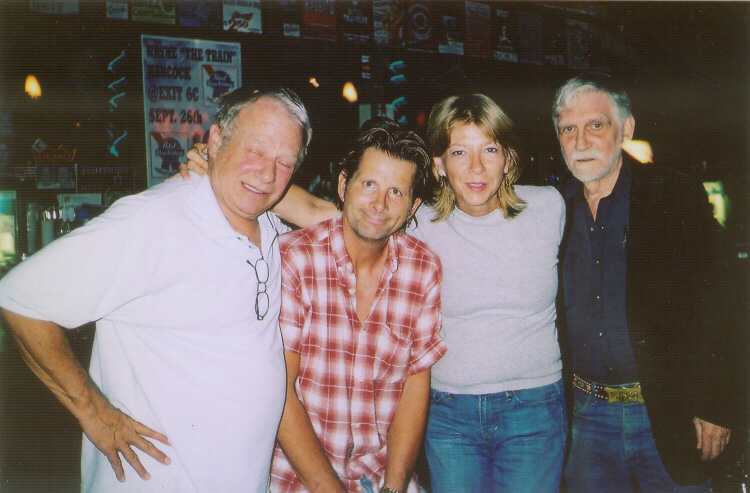
Earl Hickey and his brother, Randy, played by
David Teegarden and Steve Pryor, plus Jana & Rocky
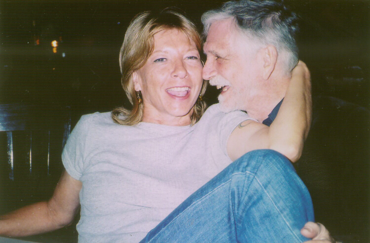
Jana & Rocky
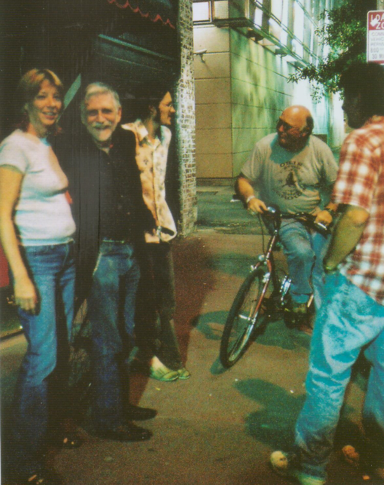
Jana, Rocky, Jesse Aycock, Scott Aycock & Steve
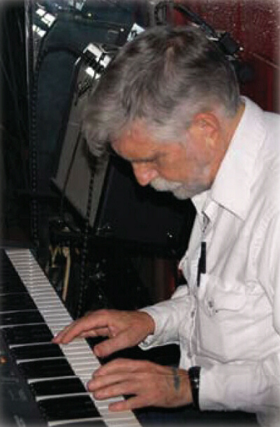
VIDEO TRIBUTE TO PETER MCWILLIAMS - Highly recommended
Rocky Recommends
The Absolute Best Web-Based News Service in the World
A Daily Synopsis of Liberty-related World News
Rocky's Tribute to Flash Terry

Rocky with Eric Clapton and JJ Cale in Concert
at the Crossroads Guitar Festival in Dallas
With Bill Raffensperger at the far left.
Kokopelli is sitting in on flute on Rock's piano, just
above and to the left of a libertarian bumper sticker.
Rocky Appears in Books and Films
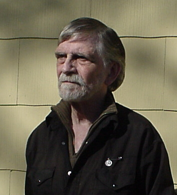
Rocky's new car projects
NEW SECTION: ROCKY'S RECOMMENDATIONS
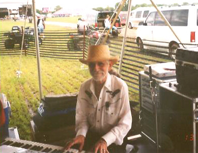
Rocky plays piano at the Country Fever Festival
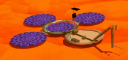
CLICK HERE TO LEARN WHAT
HAPPENED TO THE BEAGLE
MARS MISSION

The Luggage and the Victor MG Special
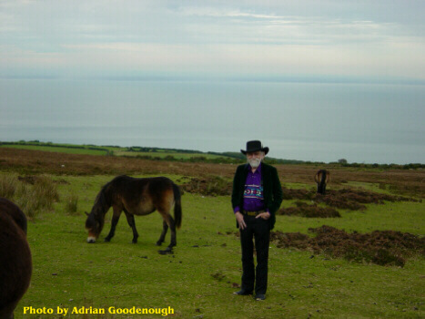
Rocky and 4-legged Friends on Exmoor, England
With the Sea in the background


The Luggage
Rocky with the JJ Cale Band

On Tour in Colorado, August 15 - 24, 2002
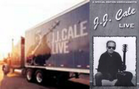
JJ Cale Live CD w/Rocky on piano
JJ Cale's CD's
Click here for Rocky's eBay Auctions
ESSENTIAL LINKS!
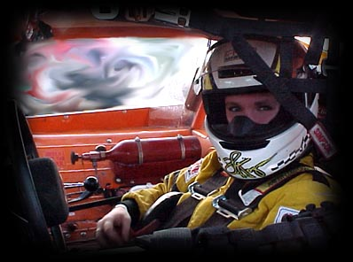
Rocky's Niece,
Sherri Hogan, Racing Driver
The Red Dirt Music Page
Rocky Racing in the 1960's
THE FUNNIEST SITE IN THE WORLD
Formula One Racer
Make sure your sound card is turned on
Rocky's Cousin, "Lick" Licklider,
the Father of the Internet
No, it's not Al Gore.
Jimmy Gordon's CD
Harmonica Wizard
with the JJ Cale Band
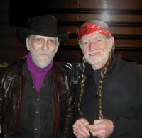
Rocky and Willie
Luggage Pictures without the logo on the doors.
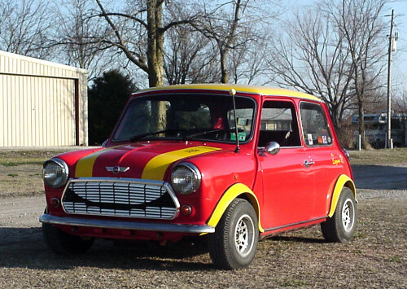
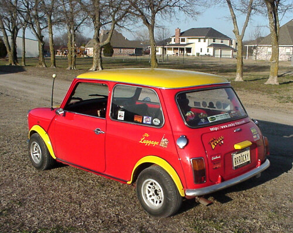
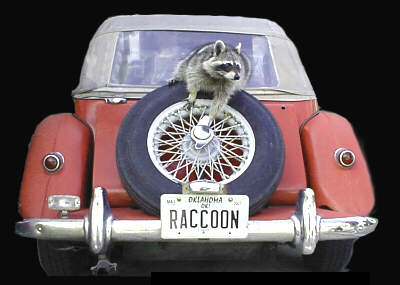
RACCOON and Raccoon
"Raccoon" is Rocky Frisco's nickname, has been for many decades.
He now has the Oklahoma vanity plate, "RACCOON," on his MG Special,
otherwise known as the "Tupperware Dragon."
It's a 1981 Victor TF-1, a turnkey car from the Victor Motorworks,
Powertrain, suspension, brakes, electrics, etc. are all from a late 70's MGB.
The bodywork, a fiberglass exact MG-TF replica, and the MGB components are
all mounted into a special Victor Factory steel frame, trimmed with the bits
from an MG-TF donor car. The car has been repainted in baby blue.
UPDATE
The MG suffered an engine compartment fire in 2010 and was taken to Bentley Automotive for repair.
The car was not only not repaired, but it was vandalized and neglected and I was lied to for months.
I had paid $4620 for the repairs. This was not refunded. The local District Attorney at the time
chose to ignore the crime. I eventually sold what was left of the car for $5000.
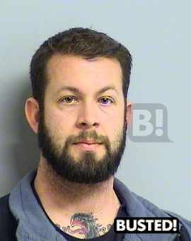
James Bentley Wright
More Mini Stuff
The Wee Beast gets his suspension tweaked at
Stephens Brothers Racing
Minis and Kiddies Love Each Other
SNORTY by STEVE DIX

Click on Image Above to go to Snorty's Web Page

This Week's SNORTY Cartoon

A Random SNORTY Cartoon from the Past
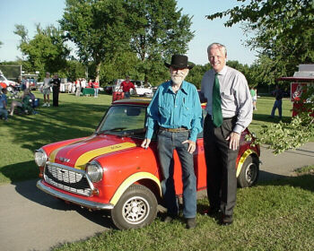
Frank Keating, formerly the Governor of the State of Oklahoma,
With Rocky and The Luggage
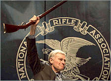
Me Too, Mister Heston.
My "Cold Dead Hands."
I recently received the following emailed rebuttal of this section of the page
from somebody named Adrian Sayers.
Adrian Sayers wrote:
THE COLD DEAD HANDS OF 32 YOUNG INNOCENT PEOPLE
Here's the reply I sent him by email

James Bentley Wright
More Mini Stuff
The Wee Beast gets his suspension tweaked at
Stephens Brothers Racing
Minis and Kiddies Love Each Other
SNORTY by STEVE DIX
Click on Image Above to go to Snorty's Web Page
This Week's SNORTY Cartoon
A Random SNORTY Cartoon from the Past

Frank Keating, formerly the Governor of the State of Oklahoma,
With Rocky and The Luggage

Me Too, Mister Heston.
My "Cold Dead Hands."
I recently received the following emailed rebuttal of this section of the page
from somebody named Adrian Sayers.
Adrian Sayers wrote:
THE COLD DEAD HANDS OF 32 YOUNG INNOCENT PEOPLE
Here's the reply I sent him by email
Why send this nonsense to me? I'm not the fool who prevented them from defending their lives.
Those people died because they were unable to defend themselves. They had no weapon to stop the murders.
They were, every one of them, disarmed victims because of Gun Control.
Gun Control disarms victims; it does not disarm murderers; murderers do not obey Gun Control laws.
When will you idiots wake up?
You are dealing with humans, not theories. Gun Control does NOT work in the Real World.
I'm a vegetarian; that's how far I take my own personal unwillingness to commit violence.
Armed citizens prevent violence; disarmed citizens are powerless against violence.
READ ABOUT IT HERE
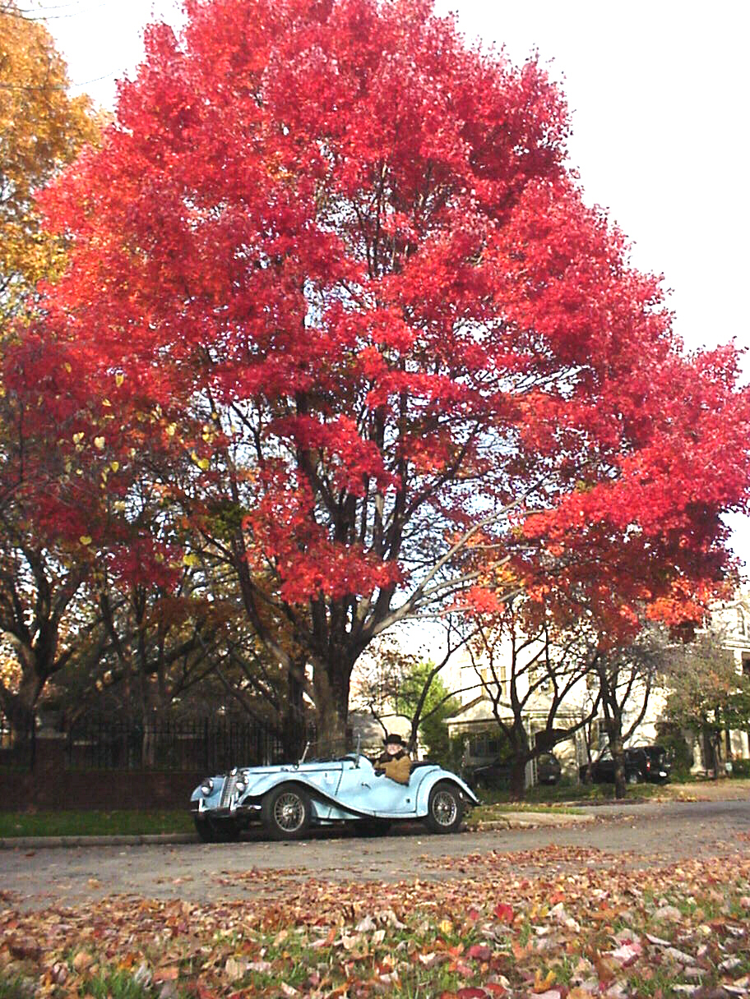